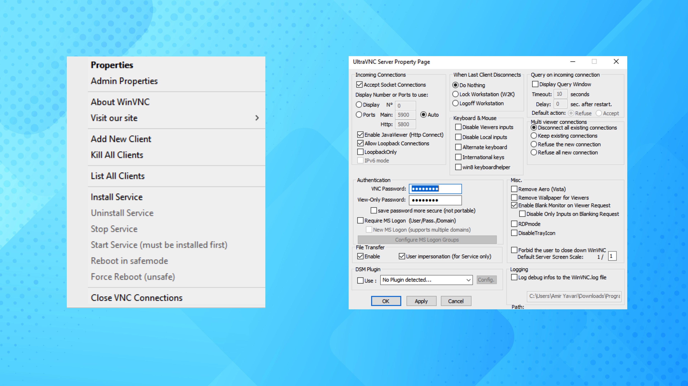
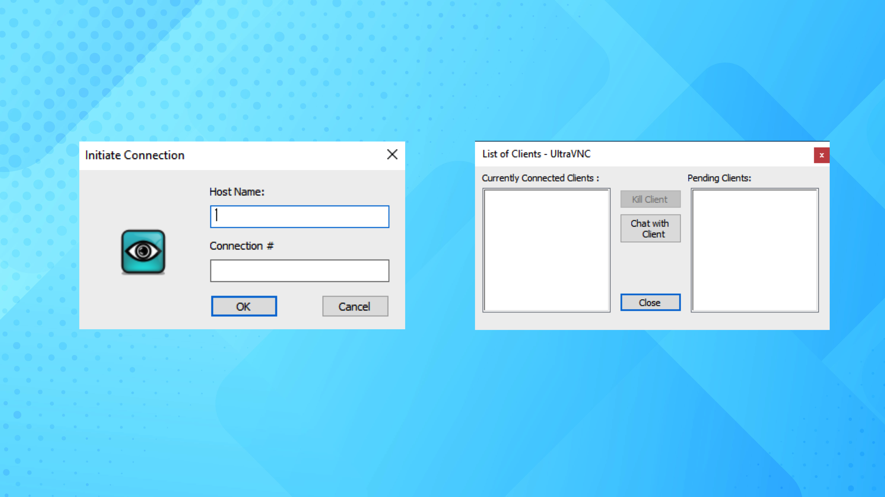
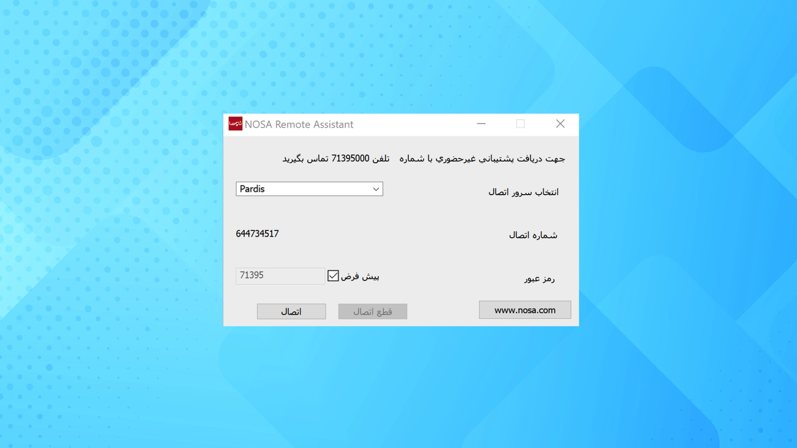
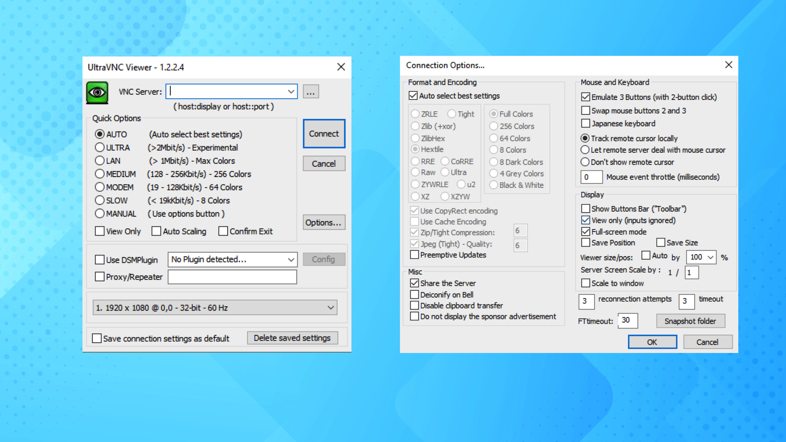
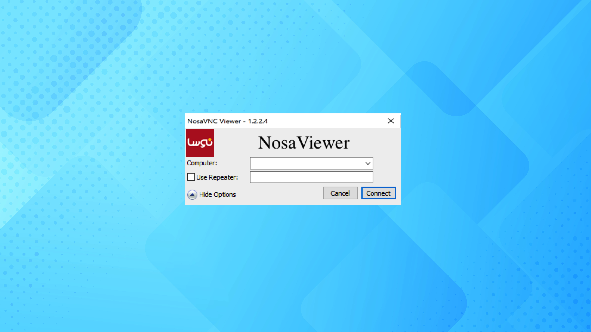

Many companies have a support department to provide proper support and customer satisfaction. Companies whose services are computer-based need to be able to view the user's system for better guidance. So some companies started building remote desktop software.
Most applications are provided by developed countries, so the servers of these applications are located in these countries, which causes delays in communication and lag in distant countries.Some software also requires an in-app purchase for a monthly subscription, which can be costly for a company. Thus, some turn to free apps that have lower security or capabilities.
Iran, as a country located in the Middle East, has been denied accessing to many applications for many years due to sanctions. One of the applications that had a great impact on the support of companies was Team Viewer, which decided to avoid providing services to Iran due to policies adopted several years ago.
Due to the low speed of the Internet in Iran, access to foreign services is very difficult and often impossible. In addition, due to widespread filtering in the country, sometimes the services can not be trusted for daily use. For example, anydesk software is often limited and also has a low speed.
During the discontinuation of remote desktop services, I noticed that companies were trying to introduce alternative applications to solve this problem. I want to point out that companies need such a tool. It can be said that the key to providing proper support is the existence of a monitoring system and step-by-step interaction with users, but the lack of access to remote desktops has caused weakness in this area. Inspired by this, the idea of creating NRa for a knowledge-based company came to my mind. -A remote desktop application to access and meet the needs of a particular company. My goal was to create an application that give opportunity to the support team to help users.
I researched the three major needs for the project. They are:
Repeater
Server
Viewer
My proposed solution was introducing a Windows program that allows users and the support team to connect to each other and also be able to use the company's internal server for connection.
To satisfy company’s issue, sometimes instead of creating an application from ground up, I decided to use an open-source project and expand viral feature to address company’s concern. Ultra VNC is an open-source remote desktop that its code and sources are available in their website and github.
Also, most programs do not differentiate between the end-user and the support team, but in this scenario we do not want users be able to connect to another computer. Therefore, it is necessary to prepare and design software based on the company's need.
The app divided users in two groups:
-
The first concept is the viewer. Viewer is the helper that must connect to the server and control and monitor it.
-
The third concept is server. Server is the recipient whose computer must be controlled and monitored.
User Flow Defines the process of how end users ig going to use the application. As previously defined, there are three parts to this project and there is a close connection between parts and all three parts need to work flawlessly together.
Disclaimer: The photos used are from Unsplash and are for non-commercial purposes.
In the first phase, we need to first run the repeater on the company's servers. To do this, we need to specify the port that the repeater needs. One of the main needs of the program is updating, so it is necessary that our module can control the version as well. We have left the version controller in the repeater because users do not have access to it and it is implemented inside the servers and has higher security.
The repeater acts like a proxy server. Both servers and viewers connect to it and can connect to each other through it. This is a way of circumventing the limitations that nat has placed on us. In fact, connections are managed and packets are sent through the repeater.
First I implemented a simple plan for the server section (end users connection with repeater). The part that the user is going to use should have a simple and understandable design. We have also tried to consider the simplest steps for the user, so that users only need to click on the connection button and announce their ID.
To do this, you need to design the script from scratch and design a new page. In other sections, the settings need to be adjusted automatically according to the company's repeater, and also the unique ID should be assigned automatically. To assign an ID, I replaced my innovative algorithm that can assign a unique nine-digit ID to each user.
For a secure connection, the user needs to provide a password for their connection that they will announce to the person when connecting. This prevents anonymous people from connecting to the user's system even if they have an ID.
256-bit encryption is used for the security of packets and their invisibility. The user does not need to be involved in doing these things and are among the basic needs of a secure connection that is done by default on the initiative.



The first four images are the original open source program, which, as can be seen, has features that are not very useful and do not even have the necessary features such as encryption. It has a very complex user interface that requires training to work with.
On the other hand, as shown in the last photo, I have changed the user interface a lot and the user only encounters this page in the whole program, which is very simple and has greatly reduced its complexity.
On the support side, there was no need to change the design much for the initial version, as it was easy to work with. In addition, the users who use them are the company's employees who can be trained. So I put my main focus on expanding security as well as structural changes that resulted in the least bugs and crashes from the original version.

As is with the case of cognitive overload, I decided to simplify the interface by reducing the menus in such as way that all services could be accessed within one click.

Here, I've showcased the high fidelity design of the app. The first iteration of the app uses the older design, a two-tabbed design with large images for users to understand the types of services that they will avail.